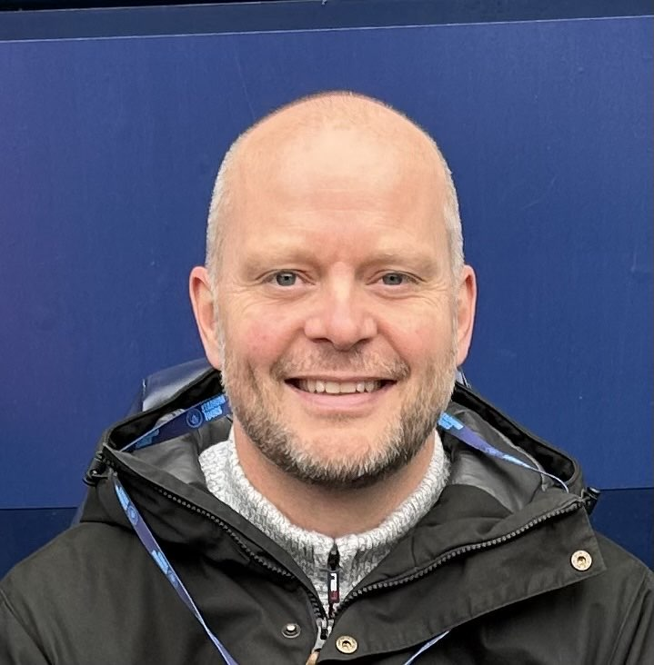

01
Mens
Reflectie, professionele ontwikkeling en ruimte om anders te kijken en te handelen.
Individuele begeleiding ↗IN VERSUS onderzoekt met mensen en organisaties wat er werkelijk gebeurt wanneer verandering vastloopt.
Niet om het makkelijker te maken, maar om het eerlijker te maken.

Reflectie, professionele ontwikkeling en ruimte om anders te kijken en te handelen.
Individuele begeleiding ↗Samen onderzoeken wat er speelt, patronen doorbreken en samenwerking versterken.
Teambegeleiding ↗Werken met de onderstroom, spanningen en vraagstukken in verandering.
Organisatiebegeleiding ↗Naast mijn werk in de praktijk schrijf en onderzoek ik over begeleidingskunde, organisatieverandering, ideologie en de spanning tussen wat we zeggen en wat we doen.
Alle artikelen & onderzoek ↗Met René Brohm geschreven over vrijheid, ideologie en de praktijk van begeleiden.
Lees het artikel ↗Kwalitatief onderzoek naar de complexiteit van levenskunstig handelen in een vrijblijvende omgeving.
Over het onderzoek ↗Een verdere verkenning van de relatie tussen ideologie, democratie en organisatieverandering.
Meer over mijn onderzoek ↗
Evert Nolta
IN VERSUS is mijn praktijk voor begeleiding, onderzoek en organisatieontwikkeling. Mijn achtergrond ligt in IT, organisatieontwikkeling en begeleidingskunde. Vanuit die combinatie onderzoek ik wat er gebeurt wanneer mensen en organisaties proberen te veranderen.
Mijn aandacht gaat vaak naar het moment waarop iets niet meer helemaal lijkt te kloppen: wanneer wat we zeggen en wat we doen uiteen lopen, als een patroon blijft terugkeren of een oplossing het probleem vooral opnieuw organiseert.
Ik vind dat we daar niet te snel overheen moeten stappen. Het zegt iets over wat er onder de oppervlakte speelt en over het systeem waarin we werken. Ik onderzoek samen met anderen wat er onder ligt, welke ideologische aannames het gesprek sturen en welke ruimte ontstaat wanneer we het ongemak serieus nemen
Meer over IN VERSUS ↗Als je merkt dat iets vastloopt, maar nog niet precies kunt benoemen wat, dan is dat vaak precies het moment waarop mijn werk begint.